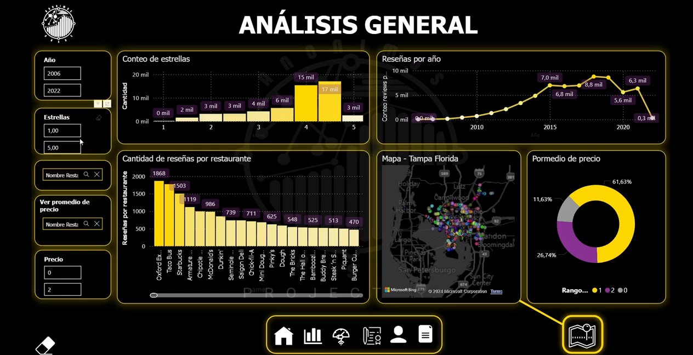
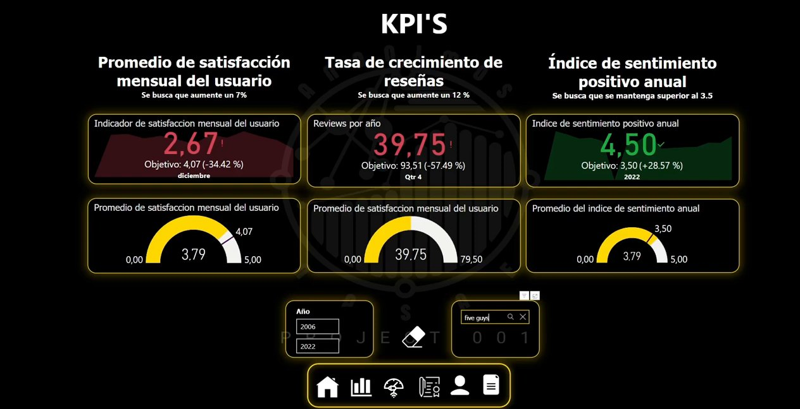

Proyecto final de Henry · Equipo de 5 · 2024
Recomendador de restaurantes en Tampa, Florida
Cruzamos reseñas de Google Maps y Yelp, analizamos el sentimiento y armamos un sistema que recomienda locales según lo que cada usuario ya reseñó.
Mi parte: analista de datos del equipo. Hice el dashboard completo en Power BI y apoyé los procesos ETL.
Power BIPythonETLGoogle Cloud
Mi dashboard en Power BIPasa el cursor para ampliar

